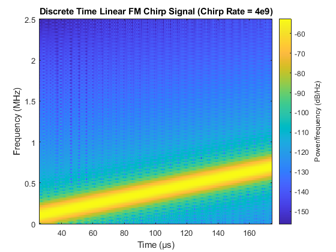
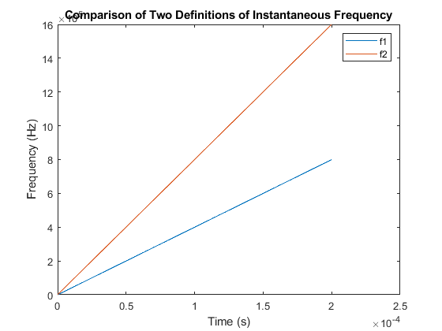
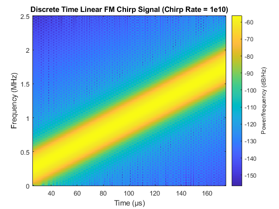
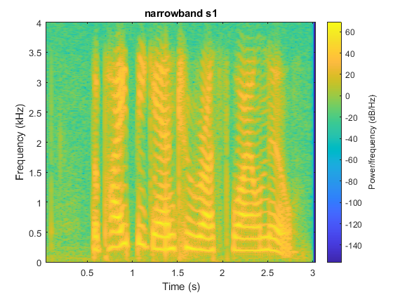
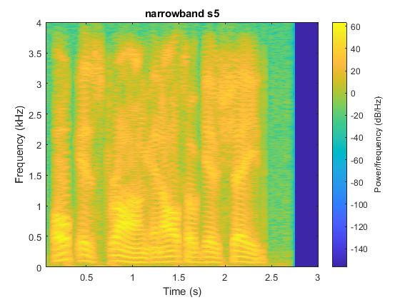
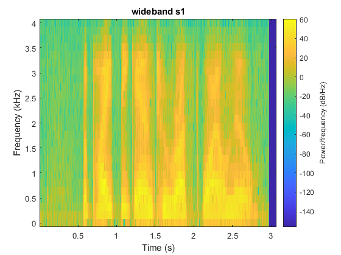
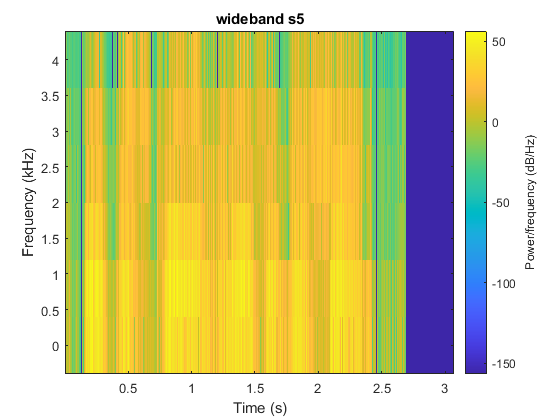
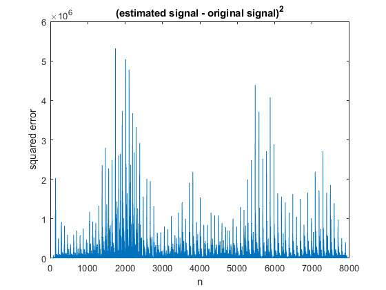
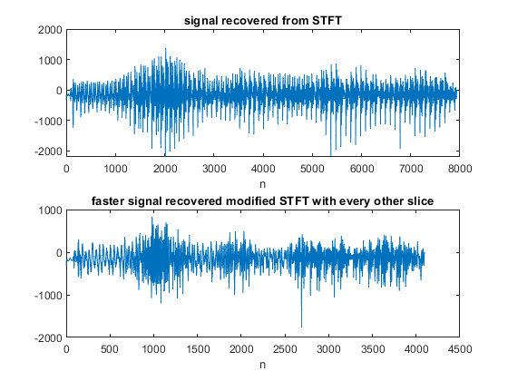

Contents
clc;
close all;
html = true;
1.
if html == true
close all;
end
sampling_freq = 5e6;
chirp_rate = 4e9;
t = 0:1/(5e6):200e-6;
generated_chirp = chirp(t,0,1,4e9);
spectrogram(generated_chirp,triang(256),255,256, sampling_freq,'yaxis')
title('Discrete Time Linear FM Chirp Signal (Chirp Rate = 4e9)')

2.
if html == true
close all;
end
phi = 2*pi*chirp_rate*t.^2;
f1 = chirp_rate.*t;
f2 = 1./(2*pi)*diff(phi)/(t(2)-t(1));
figure;
plot(t,f1,t(1:end-1), inst_freq2);
xlabel('Time (s)');
ylabel('Frequency (Hz)');
title('Comparison of Two Definitions of Instantaneous Frequency');
legend('f1', 'f2');

3.
if html == true
close all;
end
figure;
chirp_rate = 1e10;
generated_chirp = chirp(t,0,1,chirp_rate);
spectrogram(generated_chirp,triang(256),255,256, sampling_freq, 'yaxis')
title('Discrete Time Linear FM Chirp Signal (Chirp Rate = 1e10)')

4.
if html == true
close all;
end
fs = 8e3;
load s1.mat
load s5.mat
figure;
spectrogram(s1, triang(600),599,600, fs, 'yaxis')
title ('narrowband s1')
figure;
spectrogram(s5, triang(1000),999,1000, fs, 'yaxis')
title ('narrowband s5')
 
5.
if html == true
close all;
end
figure;
spectrogram(s1, triang(50),49,50, fs, 'yaxis')
title('wideband s1')
figure;
spectrogram(s5, triang(10),9,10, fs, 'yaxis')
title('wideband s5')
 
6.
if html == true
close all;
end
load vowels.mat
s = spectrogram(vowels,rectwin(256),128,1024, fs, 'yaxis');
s = [s;flipud(s)];
signal = reconstruct_signal(s);
difference = ((signal - vowels(1:size(signal,1))).^2);
figure;
plot(difference)
ylabel('squared error')
xlabel('n')
title('(estimated signal - original signal)^2')

7.
if html == true
close all;
end
s = spectrogram(vowels,rectwin(256),128,1024, fs, 'yaxis');
s = s(:,(1:2:end));
s = [s;flipud(s)];
faster_signal = reconstruct_signal(s);
subplot(2,1,1);
plot(signal)
xlabel('n')
title('signal recovered from STFT')
subplot(2,1,2);
plot(faster_signal)
xlabel('n')
title('faster signal recovered modified STFT with every other slice')
audiowrite('vowels.wav', vowels, fs)
audiowrite('vowels_estimate.wav', signal, fs)
audiowrite('vowels_estimate_faster.wav', faster_signal, fs)
Warning: Data clipped when writing file.
Warning: Data clipped when writing file.
Warning: Data clipped when writing file.
